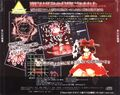
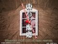
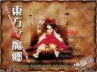

<div class="container">

<mat-card>
  <!-- <mat-card-title>Embodiment of Scarlet Devil</mat-card-title> -->
  <!-- <h1>Embodiment of Scarlet Devil</h1>

  <mat-card-content>
    Touhou KoumakyouScarlet Devil Land~ the Embodiment of Scarlet Devil
    (東方紅魔郷　～ the Embodiment of Scarlet Devil) is a vertical-scrolling
    danmaku shoot 'em up, and is the sixth official game in the Touhou Project
    by Team Shanghai Alice's sole member ZUN. It is the first to be released
    specifically for the Windows operating system and a "clean break" from the
    PC-98 era.
  </mat-card-content>

  <h2>Gameplay</h2>

  <mat-card-content>
    the Embodiment of Scarlet Devil follows on from the PC-98 titles and Seihou
    in terms of basic gameplay, but makes certain key changes. The biggest
    change is the introduction of the Spell Card system. The pacing was also
    changed to a great degree, but some aspects of the PC-98 and Seihou "fast
    patterns" pacing remain in this game, which has given the Embodiment of
    Scarlet Devil a reputation for having a higher difficulty than later games.
    The following games, Perfect Cherry Blossom and Imperishable Night, would
    mostly remove this kind of pacing. the Embodiment of Scarlet Devil once
    again features two playable characters to choose from with two equipment
    types each, much like Lotus Land Story. Reimu Hakurei can cover a wide area
    of the screen with weaker attacks, while Marisa Kirisame relies on speed and
    power to make up for a thinner attack spread. Each character and type has
    its own bomb as well, now called Spell Cards. Another change from Lotus Land
    Story and Mystic Square is the introduction of an "Item Get" feature, which
    allows you to collect all items on the screen by moving to the top of the
    screen if you are at full power. This mechanic would appear in all later
    games. One thing that remains from the PC-98 titles: there are six total
    stages in the main game, but playing on Easy difficulty will end the game
    after Stage 5. Completing Normal difficulty is once again required to unlock
    the Extra Stage as well.
  </mat-card-content>

  <p></p>

  <h2>Concept</h2>
  <mat-card-content>
    ZUN's general goal when creating the Embodiment of Scarlet Devil was to stay
    away from systems appearing in newer shoot 'em ups, which he thought overly
    complicated the games, and to let the player have fun simply dodging
    bullets.[1] When he started creating the game it was first named Touhou
    Kouchakan (東方紅茶館 lit. "Eastern Scarlet Teahouse"), with the stage 3
    theme being in reference to the name. However, ZUN felt the name didn't
    match the game's story so eventually it got changed.[2] As the first Windows
    game, the engine was written from scratch using the DirectX API - with help
    from a few libraries from Amusement Makers - and ZUN apologizes for the
    seeming lack of creativity with things like grunt enemies, citing a lack of
    manpower while concentrating on building up libraries and tools himself.[3]
    This particular engine would later be used for the games Perfect Cherry
    Blossom, Imperishable Night, and Phantasmagoria of Flower View.
  </mat-card-content>

  <p></p>

  <h2>Story</h2>

  <mat-card-content>
    During a peaceful summer in Gensokyo, an unnatural scarlet mist appears
    without warning and covers much of the land. It is strong enough to block
    out the sun, causing the affected areas to become dark and cold. Reimu
    Hakurei, a shrine maiden working at the Hakurei Shrine, and Marisa Kirisame,
    a magician, set out to find the source of the mist. Their search will lead
    them to the Scarlet Devil Mansion and to its eccentric owners...
  </mat-card-content>

  <h2>Music</h2>

  <mat-card-content>
    Like Kioh Gyoku, which was released a few months earlier, the soundtrack for
    this game was originally made with the Roland SC-88Pro MIDI module. However,
    before the game's release, ZUN arranged and re-recorded the tracks using the
    Roland Edirol SD-90, which ZUN got in late 2001.[4] Two separate versions of
    the soundtrack with seventeen tracks each were included in the game. The WAV
    version is based on ZUN's later arrangement of the soundtrack, and mark a
    significant step up from the FM synthesis ZUN used for the PC-98 games. The
    MIDI version is based on the original compositions, and will only play
    correctly on an SC-88Pro. Recordings of the MIDI versions made using this
    module can be found here. ZUN was aiming to give the music a "brighter" feel
    over the PC-98 games by attempting to add jazz fusion elements to the
    tracks. He goes on to say that Septette for a Dead Princess and U.N. Owen
    was her? were the songs he most thought of as representative of the
    Embodiment of Scarlet Devil.[3] Incidentally, these two songs are among the
    tunes most popular in the fandom. Shanghai Alice of Meiji 17 and U.N. Owen
    was her? would later appear in the music album Dolls in Pseudo Paradise,
    with the former being the original version of the track.[4] Shanghai Scarlet
    Teahouse ~ Chinese Tea would also be arranged for Changeability of Strange
    Dream, and Locked Girl ~ The Girl's Sealed Room for Retrospective 53
    minutes. U.N. Owen was her? was also arranged for a CD extra that came with
    the first volume of Strange and Bright Nature Deity, where it was redone to
    carry a more suitable tone for the manga. In addition, Tomboyish Girl In
    Love would later be arranged in Phantasmagoria of Flower View retitled
    Adventure of the Lovestruck Tomboy.
  </mat-card-content>

  <h2>Press</h2>

  <mat-card-content>
    the Embodiment of Scarlet Devil was first announced on ZUN's website on
    April 15, 2002, approximately three and a half years after the release of
    Mystic Square. At this time, it was being developed under the name "Eastern
    Scarlet Teahouse" (東方紅茶館 Touhou Kouchakan); it was changed to the
    current name afterwards. Beginning with an early trial version on June 10,
    2002, the trial versions went through a number of revisions until the game's
    final release at Comiket 62 on August 11, 2002. Patches would be released up
    until late that November, ending on version 1.02h. In addition to its normal
    release, ZUN also released an exclusive Extra stage demo to doujin shops
    such as Tora no Ana and Akibaoukoku. In this version, the last part of the
    boss is much harder.[4]
  </mat-card-content>

  <h2>Reception</h2>

  <mat-card-content>
    The characters of the Embodiment of Scarlet Devil continue to be some of the
    most popular ones in the Touhou Project. In particular, Sakuya Izayoi has
    consistently been in the top 4 in the Touhou Popularity Contests held by the
    Japanese Touhou Wiki since its inception after Comiket 63. Remilia Scarlet
    and Flandre Scarlet continue to be well-loved characters, as well. In
    addition to the ever-popular Septette for the Dead Princess and U.N. Owen
    was Her?, songs such as Shanghai Alice in Meiji 17 and Shanghai Scarlet
    Teahouse ~ Chinese Tea gained much recognition.
  </mat-card-content>

  <h2>Gallery</h2> -->

  <div class="container">
    <!-- <div class="row gallery-box justify-content-md-center">
      <div class="col-md-2 col-sm-6">
        
        <p>Back Cover</p>
        <br />
      </div>

      <div class="col-md-2 col-sm-6">
        
        <p>Back Cover</p>
        <br />
      </div>

      <div class="col-md-2 col-sm-6">
        
        <p>Back Cover</p>
        <br />
      </div>

      <div class="col-md-2 col-sm-6">
        
        <p>Back Cover</p>
        <br />
      </div>

      <div class="col-md-auto col-sm-auto"></div>
    </div> -->

    <div class="row">
      <div class="col-md-12">
        <div class="well">
          <h1>Embodiment of Scarlet Devil</h1>
        </div>
      </div>

      <div class="col-md-12">
        <div class="row">
          <div class="col-md-8">
            <div class="well">
              <!-- <h1>Embodiment of Scarlet Devil</h1> -->
              <br/>
              <mat-card-content>
                Touhou KoumakyouScarlet Devil Land~ the Embodiment of Scarlet
                Devil (東方紅魔郷　～ the Embodiment of Scarlet Devil) is a
                vertical-scrolling danmaku shoot 'em up, and is the sixth
                official game in the Touhou Project by Team Shanghai Alice's
                sole member ZUN. It is the first to be released specifically for
                the Windows operating system and a "clean break" from the PC-98
                era.
              </mat-card-content>
<!-- 
              <span class="headline"></span>  -->
              <h2 class="headline">Gameplay</h2>
              <br/>
              <mat-card-content>
                the Embodiment of Scarlet Devil follows on from the PC-98 titles
                and Seihou in terms of basic gameplay, but makes certain key
                changes. The biggest change is the introduction of the Spell
                Card system. The pacing was also changed to a great degree, but
                some aspects of the PC-98 and Seihou "fast patterns" pacing
                remain in this game, which has given the Embodiment of Scarlet
                Devil a reputation for having a higher difficulty than later
                games. The following games, Perfect Cherry Blossom and
                Imperishable Night, would mostly remove this kind of pacing. the
                Embodiment of Scarlet Devil once again features two playable
                characters to choose from with two equipment types each, much
                like Lotus Land Story. Reimu Hakurei can cover a wide area of
                the screen with weaker attacks, while Marisa Kirisame relies on
                speed and power to make up for a thinner attack spread. Each
                character and type has its own bomb as well, now called Spell
                Cards. Another change from Lotus Land Story and Mystic Square is
                the introduction of an "Item Get" feature, which allows you to
                collect all items on the screen by moving to the top of the
                screen if you are at full power. This mechanic would appear in
                all later games. One thing that remains from the PC-98 titles:
                there are six total stages in the main game, but playing on Easy
                difficulty will end the game after Stage 5. Completing Normal
                difficulty is once again required to unlock the Extra Stage as
                well.
              </mat-card-content>

              <h2 class="headline">Concept</h2>
              <br/>
              <mat-card-content>
                ZUN's general goal when creating the Embodiment of Scarlet Devil
                was to stay away from systems appearing in newer shoot 'em ups,
                which he thought overly complicated the games, and to let the
                player have fun simply dodging bullets.[1] When he started
                creating the game it was first named Touhou Kouchakan
                (東方紅茶館 lit. "Eastern Scarlet Teahouse"), with the stage 3
                theme being in reference to the name. However, ZUN felt the name
                didn't match the game's story so eventually it got changed.[2]
                As the first Windows game, the engine was written from scratch
                using the DirectX API - with help from a few libraries from
                Amusement Makers - and ZUN apologizes for the seeming lack of
                creativity with things like grunt enemies, citing a lack of
                manpower while concentrating on building up libraries and tools
                himself.[3] This particular engine would later be used for the
                games Perfect Cherry Blossom, Imperishable Night, and
                Phantasmagoria of Flower View.
              </mat-card-content>

              <p></p>

              <h2 class="headline">Story</h2>

              <br/>
              <mat-card-content>
                During a peaceful summer in Gensokyo, an unnatural scarlet mist
                appears without warning and covers much of the land. It is
                strong enough to block out the sun, causing the affected areas
                to become dark and cold. Reimu Hakurei, a shrine maiden working
                at the Hakurei Shrine, and Marisa Kirisame, a magician, set out
                to find the source of the mist. Their search will lead them to
                the Scarlet Devil Mansion and to its eccentric owners...
              </mat-card-content>

              
            </div>
          </div>

          <div class="col-md-4">
            <div class="well">
              <mat-card>
                <mat-card-title>
                  The Embodiment of Scarlet Devil</mat-card-title
                >

                
                <br />
                <!-- <mat-card-content> Teste </mat-card-content> -->

                <mat-grid-list cols="6" rowHeight="2:1">
                  <mat-grid-tile colspan="2" class="description"
                    ><span>Developer</span></mat-grid-tile
                  >
                  <mat-grid-tile colspan="4" class="content"
                    ><span>Team Shanghai Alice</span></mat-grid-tile
                  >
                  <mat-grid-tile colspan="2" class="description"
                    ><span>Publisher</span></mat-grid-tile
                  >
                  <mat-grid-tile colspan="4" class="content"
                    ><span>Team Shanghai Alice</span></mat-grid-tile
                  >
                  <mat-grid-tile colspan="2" rowspan="3" class="description"
                    ><span>Released</span></mat-grid-tile
                  >
                  <mat-grid-tile colspan="4" rowspan="3" class="content"
                    ><span
                      >Trial: June 10, 2002 Full: August 11, 2002 (Comiket
                      62)</span
                    ></mat-grid-tile
                  >
                  <mat-grid-tile colspan="2" rowspan="2" class="description"
                    ><span>Genre</span></mat-grid-tile
                  >
                  <mat-grid-tile colspan="4" rowspan="2" class="content"
                    ><span>Vertical Danmaku Shooting Game</span></mat-grid-tile
                  >
                  <mat-grid-tile colspan="2" class="description"
                    ><span>Gameplay</span></mat-grid-tile
                  >
                  <mat-grid-tile colspan="4" class="content"
                    ><span>Single-Player Story Mode</span></mat-grid-tile
                  >
                  <mat-grid-tile colspan="2" class="description"
                    ><span>Platforms</span></mat-grid-tile
                  >
                  <mat-grid-tile colspan="4" class="content"
                    ><span>Windows 98/SE/ME/2000/XP</span></mat-grid-tile
                  >
                  <mat-grid-tile colspan="2" rowspan="8" class="description"
                    ><span>Requirements</span></mat-grid-tile
                  >
                  <mat-grid-tile colspan="4" rowspan="8" class="content">
                    <ul>
                      <li>Pentium 500MHz</li>
                      <li>320MB hard disk</li>
                      <li>Direct3D</li>
                      <li>DirectX 8</li>
                      <li>4MB VRAM</li>
                      <li>DirectSound</li>
                      <li>SC-88Pro (if MIDI is selected)</li>
                      <li>32MB RAM</li>
                    </ul>
                  </mat-grid-tile>
                </mat-grid-list>
              </mat-card>
            </div>
          </div>
        </div>

        <div class="row">

          <div class="col-md-12">
            <div class="well">

          <h2 class="headline">Music</h2>
          <br/>
              <mat-card-content>
                Like Kioh Gyoku, which was released a few months earlier, the
                soundtrack for this game was originally made with the Roland
                SC-88Pro MIDI module. However, before the game's release, ZUN
                arranged and re-recorded the tracks using the Roland Edirol
                SD-90, which ZUN got in late 2001.[4] Two separate versions of
                the soundtrack with seventeen tracks each were included in the
                game. The WAV version is based on ZUN's later arrangement of the
                soundtrack, and mark a significant step up from the FM synthesis
                ZUN used for the PC-98 games. The MIDI version is based on the
                original compositions, and will only play correctly on an
                SC-88Pro. Recordings of the MIDI versions made using this module
                can be found here. ZUN was aiming to give the music a "brighter"
                feel over the PC-98 games by attempting to add jazz fusion
                elements to the tracks. He goes on to say that Septette for a
                Dead Princess and U.N. Owen was her? were the songs he most
                thought of as representative of the Embodiment of Scarlet
                Devil.[3] Incidentally, these two songs are among the tunes most
                popular in the fandom. Shanghai Alice of Meiji 17 and U.N. Owen
                was her? would later appear in the music album Dolls in Pseudo
                Paradise, with the former being the original version of the
                track.[4] Shanghai Scarlet Teahouse ~ Chinese Tea would also be
                arranged for Changeability of Strange Dream, and Locked Girl ~
                The Girl's Sealed Room for Retrospective 53 minutes. U.N. Owen
                was her? was also arranged for a CD extra that came with the
                first volume of Strange and Bright Nature Deity, where it was
                redone to carry a more suitable tone for the manga. In addition,
                Tomboyish Girl In Love would later be arranged in Phantasmagoria
                of Flower View retitled Adventure of the Lovestruck Tomboy.
              </mat-card-content>

              <h2 class="headline">Press</h2>
              <br/>
              <mat-card-content>
                the Embodiment of Scarlet Devil was first announced on ZUN's
                website on April 15, 2002, approximately three and a half years
                after the release of Mystic Square. At this time, it was being
                developed under the name "Eastern Scarlet Teahouse" (東方紅茶館
                Touhou Kouchakan); it was changed to the current name
                afterwards. Beginning with an early trial version on June 10,
                2002, the trial versions went through a number of revisions
                until the game's final release at Comiket 62 on August 11, 2002.
                Patches would be released up until late that November, ending on
                version 1.02h. In addition to its normal release, ZUN also
                released an exclusive Extra stage demo to doujin shops such as
                Tora no Ana and Akibaoukoku. In this version, the last part of
                the boss is much harder.[4]
              </mat-card-content>

              <h2 class="headline">Reception</h2>
              <br/>
              <mat-card-content>
                The characters of the Embodiment of Scarlet Devil continue to be
                some of the most popular ones in the Touhou Project. In
                particular, Sakuya Izayoi has consistently been in the top 4 in
                the Touhou Popularity Contests held by the Japanese Touhou Wiki
                since its inception after Comiket 63. Remilia Scarlet and
                Flandre Scarlet continue to be well-loved characters, as well.
                In addition to the ever-popular Septette for the Dead Princess
                and U.N. Owen was Her?, songs such as Shanghai Alice in Meiji 17
                and Shanghai Scarlet Teahouse ~ Chinese Tea gained much
                recognition.
              </mat-card-content>
            </div>
          </div>
          
          <h2 class="headline">Gallery</h2>
          <br/>
          <div class="col-md-12">
            <div class="well">
              
              <div class="row gallery-box justify-content-md-center">
                <div class="col-md-2 col-sm-6">
                  
                  <p>Back Cover</p>
                  <br />
                </div>
          
                <div class="col-md-2 col-sm-6">
                  
                  <p>Back Cover</p>
                  <br />
                </div>
          
                <div class="col-md-2 col-sm-6">
                  
                  <p>Back Cover</p>
                  <br />
                </div>
          
                <div class="col-md-2 col-sm-6">
                  
                  <p>Back Cover</p>
                  <br />
                </div>
          
                <div class="col-md-auto col-sm-auto"></div>
              </div>
            </div>
          </div>
        </div>
      </div>
    </div>
    <!-- <div class="row">
      <div class="col-md-4">
        <div class="well">6</div>
      </div>
      <div class="col-md-4">
        <div class="well">7</div>
      </div>
      <div class="col-md-4">
        <div class="well">8</div>
      </div>
    </div> -->
  </div>

  <mat-card-footer>
    <span>Touhou Wiki</span>
  </mat-card-footer>
</mat-card>

</div>
